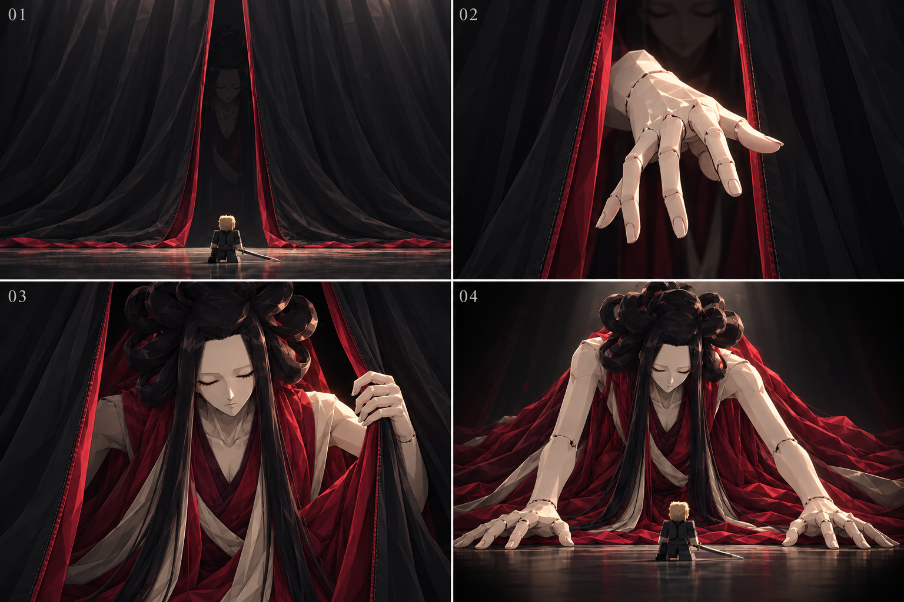
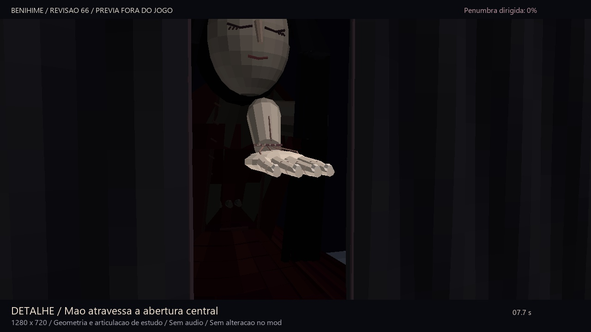
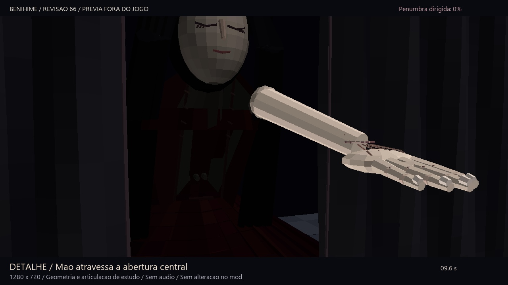

BLEACH / ESTUDO 66 / PREVIA FORA DO JOGO
Abertura central, presença na sombra e novos detalhes
A mão sai pelo espaço entre os dois panos. Benihime já está no interior, quase oculta; a luz revela o corpo à medida que ele avança. Roupas e mãos recebem novas camadas de construção.
Revisão da prévia de produção. Código do mod e Zaraki intactos. Sem vozes ou novos efeitos de gameplay.
0,0 / 26,0 s
Entrada com a cortina física, figura contínua no interior e mãos detalhadas. A penumbra escurece mais as bordas e conserva a leitura central.
No vídeo do observador, a mesma figura continua no cenário enquanto o olhar se desvia. O efeito recua fora do enquadramento da Bankai. É uma proposta visual, ainda sem aplicar Cegueira/Escuridão ou alterar câmera de outros jogadores no mod.
Revisão visual

Direção artística atualizada: cortina em dois panos, mão na abertura central, interior escuro e vestes detalhadas. Ilustração conceitual; não é captura do jogo.
Construção das mãos em detalhe

Palma e dedos atravessam o espaço livre. A câmera se aproxima para conferir as bordas do pano.
Unhas, juntas, tendões, polegar lateral e costuras do punho. Iluminação de inspeção sem vinheta neste clipe.Arquivos
Entrada MP4 · 720p Mão em detalhe Olhar do observador GIF Roteiro e verificação